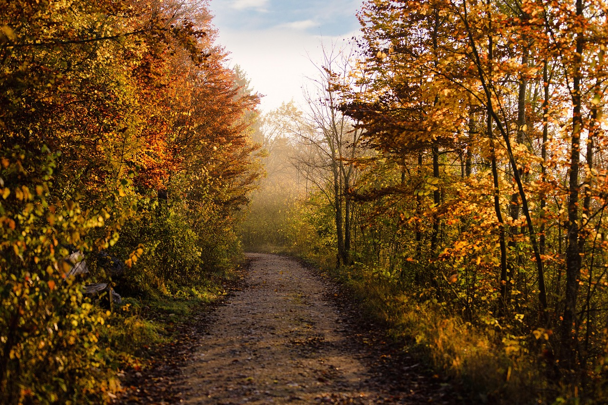
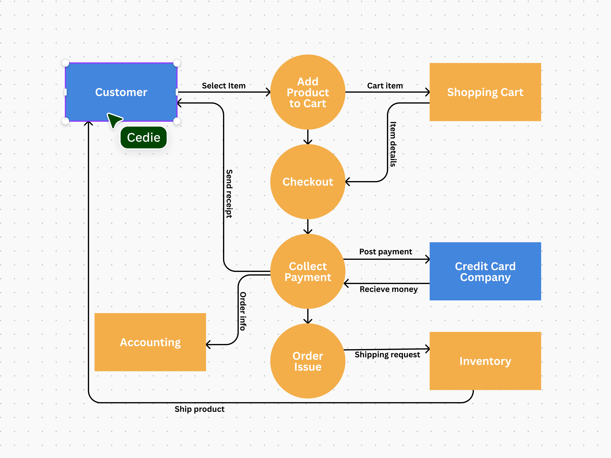

A tree is a tall, long-lived plant with a single main stem (trunk) that supports branches and leaves, anchored by a root system. Trees are essential for life, providing oxygen, food, and shelter, and are vital for the environment by purifying water, preventing soil erosion, and regulating climate. Their structure allows them to grow tall, and their bark protects the layers of tissue that grow each year, making the trunk wider

A tree garden is a space where trees are planted for purposes like aesthetic appeal, fruit production, or creating a unique landscape. Tree gardening can also refer to a specific agricultural practice that integrates fruit trees with annual crops, benefiting both the environment and nutrition. To create a tree garden.
